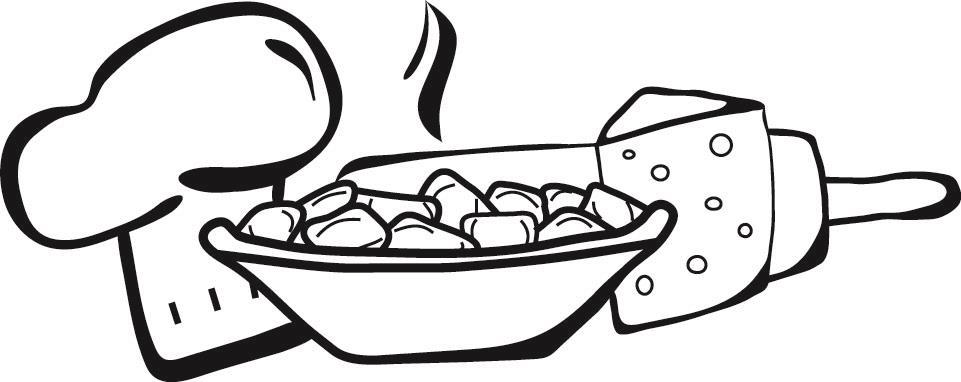

Restaurante familiar · CórdobaSentite en casa.
Sentite en casa.
Comé casero.
Pastas hechas en casa, cocina de siempre y el gusto de compartir una buena mesa.
COCINA
ARTESANAL
Y FAMILIAREl sabor de lo hecho en casa
ARTESANAL
Y FAMILIAREl sabor de lo hecho en casa

Una mesa para volver a encontrarnos.PASTAS CASERAS✳COCINA TRADICIONAL✳UNA MESA EN FAMILIA
Bienvenidos a Su CasaHay sabores que
Hay sabores que
te hacen sentir cerca.
Somos un restaurante familiar en Córdoba, con cocina artesanal y tradicional casera. Nuestra especialidad son las pastas: tallarines, ravioles, canelones y otros clásicos para disfrutar con tu salsa favorita.
Vení con la familia, con amigos o con ganas de comer rico. La mesa empieza con una buena charla y sigue con algo casero.
Te esperamosLa próxima juntada,
La próxima juntada,
en Su Casa.
Escribinos para consultar disponibilidad y reservar tu mesa. También podés llamarnos.
Tu reserva queda confirmada cuando te respondemos por WhatsApp o teléfono.
Consultanos por los horarios de atención.